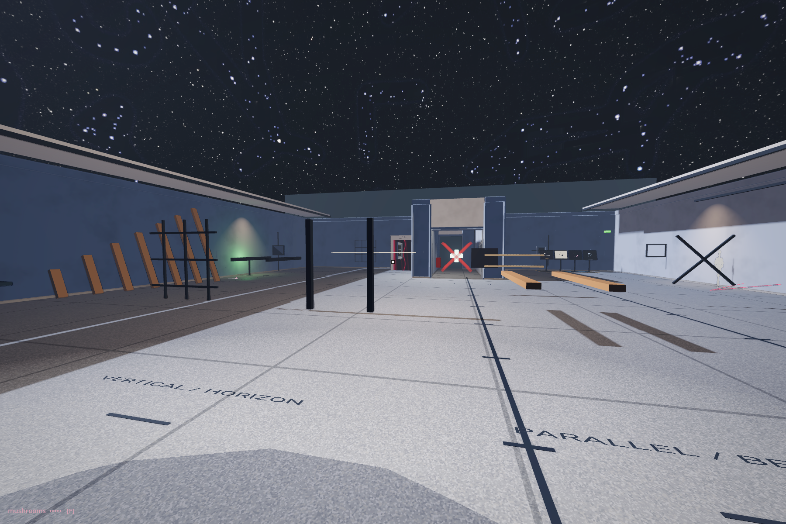
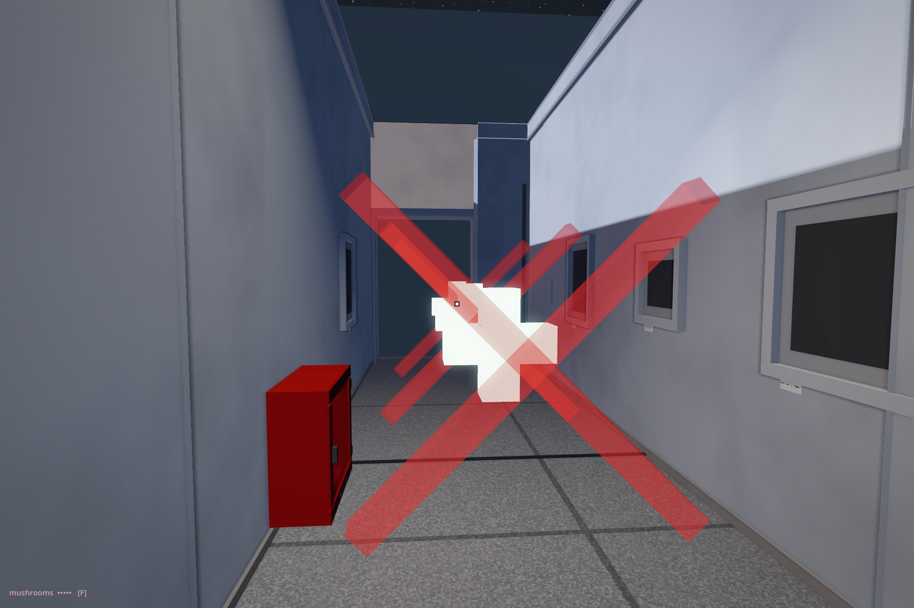
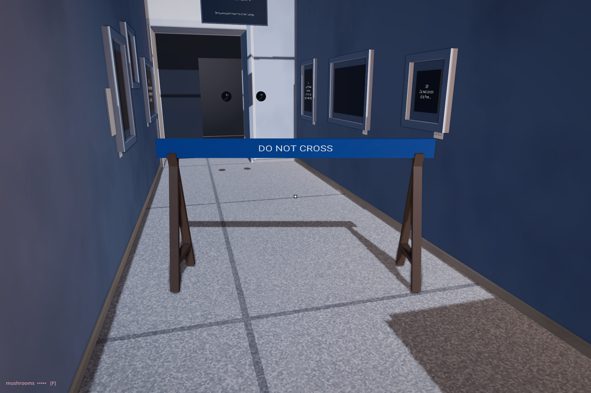
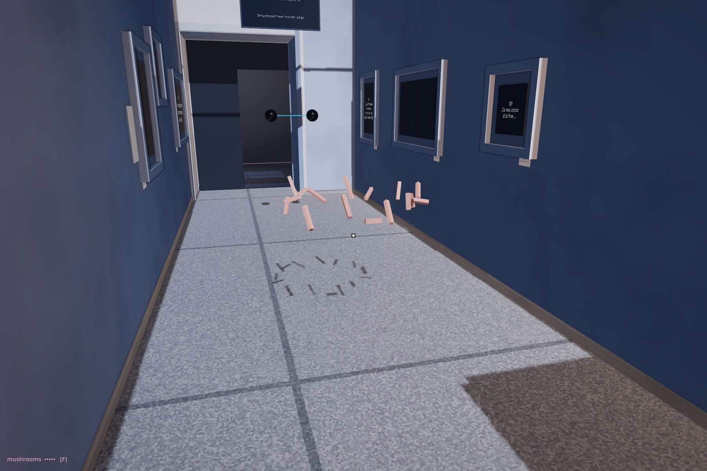

The order now begins with the measuring line in the black box. Connect the dots to open the barrier; walk the black stripe; enter the four-view line room. The small exit passage alternates × + × + × +: hurt and recovery.
The reading keeps two lines of code. The separate making companion supplies a complete, small Godot project that continues from Coordinates.
The first encounter: two endpoints, a pale segment and a changing length.

Inside the line room. Every one of its twenty grabbable rods was tested with the actual held-laser ray.

Three pairs in the authored exit corridor. X costs health; the front-facing plus restores it with a spatial chime and a burst of strokes.

Before the points connect.

After connection: the complete barrier and its collision boundary are suspended. It waits for a visitor to clear its place before rebuilding.
What was repaired
The laser's burn flag was stranded on its pickup wrapper. Its instrument now reads that configuration, and desktop carrying reaches the same held-tool condition as XR pickup. The beam breaks the room's studies after its existing dwell time. It stops at architecture; tools, resets and health services remain available.
The connection demonstration can open a rebuilt barrier again. Restoration now recognises the museum's layer-1 Walker as well as XR bodies.
The X gates use their own damage timing instead of the museum's shared creature-bite cooldown, which could skip the next X. Each plus offers up to 21 health when below full, and returns after eight seconds.
The floor plan and passage walls are unchanged. Only the six exit placements were changed or added.
final.md: exact before / after
--- before/commons/maps/Point_Lines/final.md
+++ after/commons/maps/Point_Lines/final.md
@@ -8,7 +8,16 @@
A number on the wall follows the distance between them. Try changing the direction without changing that number. The dark room leaves very little else to look at: two positions, and what happens between them.
-Through the side passage, another line has acquired an instruction.
+Can you find a span of one metre? Keep one end still and move the other around it. The segment turns while its length stays steady. We can describe that relation with two small operations:
+
+```gdscript
+var displacement := b - a
+var distance := displacement.length()
+```
+
+The first keeps a direction as well as a distance. The second gives us the length alone. Reverse the subtraction and the direction reverses; the length stays the same. Your hand may keep moving while the rounded number on the wall appears still. A display has its own smallest difference.
+
+Through the side passage: **CAN YOU CONNECT THE DOTS?**
<!-- @line_demo -->
@@ -24,40 +33,17 @@
Try crossing where the barrier stood. Before it broke, an invisible collision shape filled the space from the floor to the bar. The space looked open beneath the plank, but you could not pass through it. When it breaks, that boundary stops holding too. Disconnecting the points does not close the passage. After a short interval, the barrier returns, waiting if your body is still in its place.
-On the first connection, the demonstration calls the nearby barrier's `trigger_explosion()`. Someone joined those events in code. Geometry supplies a relation; another instruction gives that relation a consequence for your body. We could have made the connection ring a bell, or left the barrier standing.
+Connecting the points sends another instruction to the barrier. Someone joined those events in code. Geometry supplies a relation; another instruction gives that relation a consequence for your body. We could have made the connection ring a bell, or left the barrier standing.
The words, the plank and the collision boundary all helped to say **DO NOT CROSS**. Opening the way required changing what enforced that instruction. For a moment, a line has given us passage through another line's prohibition.
In Coordinates, leaving the target made another arrival possible. Here, joining the points gives us a few seconds of passage. The clock has acquired another task: it puts a prohibition back.
-<!-- @line -->
+<!-- @redline -->
-This line has two ends you can hold. Pull them apart, then bring them closer. Watch the length display. Can you find a span of one metre?
+A red line marks another division. A colour can lend urgency to the same thin form. What, here, gives it the right to stop you?
-Hold one end still and move the other around it. Try keeping the same distance. The segment can turn while its length stays steady. Once we choose to go from A to B, we can calculate a displacement with a distance and a direction.
-
-Here is an example using the positions we began learning to write in Coordinates:
-
-```gdscript
-var a := Vector3(0, 0, 0)
-var b := Vector3(1, 0, 0)
-var displacement := b - a
-var distance := displacement.length()
-```
-
-`b - a` subtracts the starting coordinates from the ending coordinates. Here the result is `(1, 0, 0)`: one unit along X, none along Y or Z. In this room we use that unit as a metre. `length()` returns one number for the size of that displacement: `1.0`.
-
-Reverse the subtraction: `a - b` gives `(-1, 0, 0)`. Its length is still one metre. The points have stayed where they are; the direction between them has changed because we chose the other point as the start.
-
-Even here, another question appears. Your hand may keep moving while the rounded number stays the same. How much difference can a display show? Remember it when we reach Trace and Grid.
-
-Two points were enough to begin. They have not made the world small.
-
-Beyond the crossing, the room opens into four views. Lines wait in pairs, in crosses, upright and in a grid. There is pleasure in following these associations, in finding how quickly a familiar mark acquires another use.[^point-lines-ingold]
-
-The clock in the first room was already running when we arrived. Beginning required leaving some code unread. Continuing asks us to choose a thread and let other questions remain open.
-
-You have changed a line with your hands. Ahead, a line has acquired words.
+Ahead, the instruction moves from a barrier to the floor.
<!-- @walk_this_line_marking -->
@@ -83,6 +69,8 @@
## A body for the line
+After the crossing, the hall opens into four views: pairs, crosses, uprights and a grid. A familiar mark begins to acquire other uses.[^point-lines-ingold]
+
The point needed a sphere before we could see it. Here a line takes the form of a stick, a plank, a luminous rod, a measure, a beam. The mathematical line has no width. Each of these has enough width to appear, and a shape the hand can find.
We might call this a *conceptual skin*: the body we give an idea so that we can encounter it. Look at what comes with that gift. The plank has a broad face and a narrow edge. The ruler divides its length into intervals. The light can seem to have hardly any substance, although this one is a mesh with a pickup body. Their common direction does not tell us what it will be like to hold them.
@@ -107,7 +95,9 @@
The fixed lines on the walls keep another version of these arrangements. Your hands can change the bodies in the room while the wall keeps its own arrangement.
-The hammer can break a rod; the pink gun leaves it coloured for a while. Wait, and the study returns. Take the rod again. Its ability to come back belongs to the room we have written, as much as its ability to resist a hand.
+Take the measuring laser. Its number ends at the body the beam meets. Keep it on a rod and the rod breaks; the reading reaches whatever lies behind it. The instrument that measured a distance has removed one of its limits.
+
+The hammer can break these studies too; the pink gun leaves them coloured for a while. Wait, and the study returns. Take the rod again. Its ability to come back belongs to the room we have written, as much as its ability to resist a hand.
## Follow this line
@@ -116,6 +106,14 @@
The mark reaches the wall. It turns upwards and continues across the plaster. You can follow it with your eyes. Your next step meets the wall's collision boundary.
The earlier connection opened a barrier. This line opens nothing. An instruction has reached the limit of the body to which it was addressed. Do you stop, turn, look up? The mark remains available to another kind of following.
+
+<!-- @anamorphic_cross -->
+
+At the exit the passage narrows: **× + × + × +**. Cross the first X and your health falls.
+
+<!-- @health_cross -->
+
+The plus gives some back, opening into a brief scatter of light and a rising sound. Hurt, recovery, hurt, recovery. Two crossed lines can read as a refusal or an offer of care; here those associations have been given access to your body.
<!-- @ -->
tutorial.md: exact before / after
--- before/commons/maps/Point_Lines/tutorial.md
+++ after/commons/maps/Point_Lines/tutorial.md
@@ -1,124 +1,64 @@
-# Point Lines
+# Point Lines — keep two ends in relation
-Build a grid of points. Connect each to its grid neighbours.
+In the black box, take one endpoint. The other stays where it is. Between them, the pale segment turns and changes length. The number on the wall follows.
-Declare the grid dimensions.
+Coordinates gave us two positions in the same frame. Here we use them together. Day Zero has already supplied the running project; Point One supplied the visible markers. The new work is a relation between their positions.
-```gdscript
-const GRID_SIZE := Vector2i(8, 8)
-const SPACING := 1.0
-```
+## Two positions, one distance
-An 8-by-8 grid with unit spacing gives 64 points and 112 edges.
+Open the supplied [line study](../../../doc/book/studies/point-lines/README.md). It contains A, B, a thin cylinder and a readout. This is a small desktop construction study. The museum keeps the XR pickup we borrowed in Coordinates; this download does not include that player.
-Spawn the points.
-
-```gdscript
-var points: Array = [] # 2D array of Node3D
-
-func spawn_grid() -> void:
- for y in GRID_SIZE.y:
- var row: Array = []
- for x in GRID_SIZE.x:
- var p := spawn_point_at(Vector3(x, 0, y) * SPACING)
- row.append(p)
- points.append(row)
-```
-
-Each point is a small mesh at a grid coordinate. The 2D array `points[y][x]` holds them by row.
-
-Separate the four things two points give you.
+In `line.gd`, A starts at `(-0.75, 1.12, 0.0)` and B at `(0.75, 1.12, 0.0)`. Their height and depth agree. Only X differs.
```gdscript
var displacement := b - a
var distance := displacement.length()
-var direction := displacement.normalized()
```
-Four different objects, not four names for one. Two points determine an infinite line — keeping only what lies between them is a decision, and the result is a **segment**. `b - a` is a **displacement**: a size and a way round. `.length()` discards the way round and returns a **distance**, a single number with no direction. `.normalized()` discards the number and returns a **direction**. Neither result can be turned back into the segment on its own.
+Subtract the start from the end: the displacement is `(1.5, 0, 0)`. Its length is `1.5`. We use one scene unit as one metre. Change B's X to `0.25`. The distance becomes one metre. You have changed one endpoint; the line and readout agree without editing either of them.
-Connect horizontal neighbours.
+## Turn without lengthening
+
+Keep A at its original position. Give B the position `Vector3(-0.75, 2.62, 0.0)`. The segment now stands upright. Its length is still 1.5 metres. Return B to its first position, then change its Z component instead. You have moved out of the first plane.
+
+Reverse the subtraction to `a - b`. The direction reverses; the length does not. A distance alone cannot tell us which end we chose as the start.
+
+## Read again as the endpoints move
+
+Here is the complete lesson script in the download:
```gdscript
-func connect_horizontal() -> void:
- for y in GRID_SIZE.y:
- for x in range(GRID_SIZE.x - 1):
- draw_line(points[y][x].position, points[y][x + 1].position)
+extends Node3D
+
+func _ready() -> void:
+ $A.position = Vector3(-0.75, 1.12, 0.0)
+ $B.position = Vector3(0.75, 1.12, 0.0)
+
+func _process(_delta: float) -> void:
+ var a: Vector3 = $A.position
+ var b: Vector3 = $B.position
+ var displacement := b - a
+ var distance := displacement.length()
+ $Segment.show_between(a, b)
+ $Readout.text = "%.2f m" % distance
```
-`x - 1` so the inner loop stops before the last column. Each iteration draws the edge between column x and column x+1.
+`_ready()` places the two markers once. `_process()` reads their positions again each frame. While running in the editor, use the Remote scene tree to change B's position: both the segment and the number follow. This borrows the editor as our moving hand. In the museum, the grab system moves the endpoint instead. The relation needs the positions, whichever tool changes them.
-Connect vertical neighbours.
+`show_between()` is our supplied drawing helper, in `segment.gd`. It places the cylinder halfway between A and B, gives it their distance as its height, then turns its long axis towards B. Its thickness is a choice made for visibility. If both ends coincide, the helper hides the cylinder rather than trying to point it in an undefined direction. Its rotation code can stay borrowed for now.
-```gdscript
-func connect_vertical() -> void:
- for y in range(GRID_SIZE.y - 1):
- for x in GRID_SIZE.x:
- draw_line(points[y][x].position, points[y + 1][x].position)
-```
+`%.2f` rounds the readout to two decimal places. The underlying positions keep more precision. A hand can move without changing the displayed number.
-Same pattern for the other axis. After both passes, every interior point has four edges; corner points have two; edge points have three.
+## A connection can do something else
-Move a point and update its lines.
+The next museum encounter asks **CAN YOU CONNECT THE DOTS?** Bring the points close and release. Their connection draws a line and breaks the nearby **DO NOT CROSS** barrier. The passage opens because an additional instruction connects those events. Distance alone cannot decide whether you are allowed through.
-```gdscript
-func move_point(coords: Vector2i, new_pos: Vector3) -> void:
- points[coords.y][coords.x].position = new_pos
- redraw_edges_touching(coords)
-```
+The hammer and laser use the same reversible break response. The laser reads the first body its ray reaches; holding its beam on a study for 1.2 seconds breaks that study. Eight seconds later it returns. We leave that pickup, collision and reset machinery in the supplied museum. Implementing it is not a prerequisite for making our first segment.
-The grid is no longer rectangular once a point moves. The adjacency structure persists.
+## What have the two ends left out?
-Add diagonal connections.
+Walk the black stripe, then take a detour. Compare the recorded trail with the straight line. The same starting and ending positions give the same displacement, however you travel between them. Our script replaces its reading every frame. It keeps no journey.
-```gdscript
-func connect_diagonal() -> void:
- for y in range(GRID_SIZE.y - 1):
- for x in range(GRID_SIZE.x - 1):
- draw_line(points[y][x].position, points[y + 1][x + 1].position)
-```
+In the open room, two lines can make a plus or a cross; moving one away from the other reveals the depth hidden by the first view. In the exit corridor, those signs have been given different consequences: × damages, + restores. Their meanings are attachments to their geometry.
-Diagonals add 49 edges to the 112 horizontal and vertical ones. The grid becomes a triangulation.
-
-Count the graph's vertices and edges.
-
-```gdscript
-func graph_stats() -> Dictionary:
- var V: int = GRID_SIZE.x * GRID_SIZE.y
- var E: int = (GRID_SIZE.x - 1) * GRID_SIZE.y + (GRID_SIZE.y - 1) * GRID_SIZE.x
- return {"vertices": V, "edges": E}
-```
-
-V = 64, E = 112 for horizontal plus vertical. Euler's formula V - E + F = 2 (for planar graphs) lets you check the face count without enumerating.
-
-You can now build a grid of points and connect them by adjacency. Point_Trace will next turn the learner's motion into a line that persists.
-
-Find a point's closest grid neighbour.
-
-```gdscript
-func closest_grid_neighbour(p: Vector3) -> Vector2i:
- var best := Vector2i(0, 0)
- var best_dist: float = INF
- for y in GRID_SIZE.y:
- for x in GRID_SIZE.x:
- var d: float = p.distance_to(points[y][x].position)
- if d < best_dist:
- best_dist = d; best = Vector2i(x, y)
- return best
-```
-
-Brute-force O(W·H) search. For larger grids, spatial indexing accelerates this to O(log).
-
-Query the degree of a grid vertex.
-
-```gdscript
-func vertex_degree(coords: Vector2i) -> int:
- var degree := 0
- if coords.x > 0: degree += 1
- if coords.x < GRID_SIZE.x - 1: degree += 1
- if coords.y > 0: degree += 1
- if coords.y < GRID_SIZE.y - 1: degree += 1
- return degree
-```
-
-Interior vertices have degree 4. Edge vertices have 3. Corner vertices have 2.
+Keep the two positions, subtraction, length and the supplied segment renderer. In Trace, we will begin keeping the positions in between.